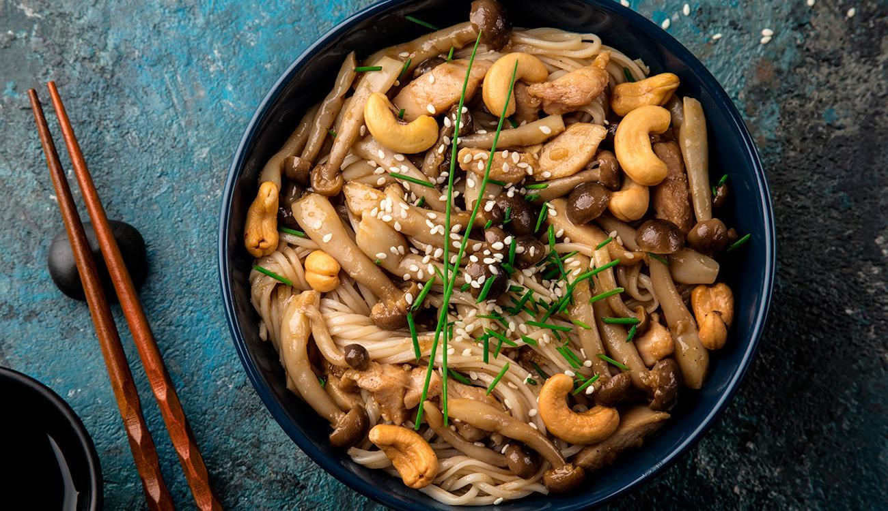

Sobre Euzinho
Home
Futuro
Comida
Curiosidades
Historia
Divertidamente
Shimeji

Ingredientes
200g de shimeji;
2 colheres de sopa rasas de molho shoyu;
2 colheres de sopa de manteiga sem sal;
Cebolinha picada a gosto.
Modo de Preparo
Comece o preparo picando bem o cogumelo, tirando o talo que vem junto com eles. Caso estejam sujos, use um pano úmido para limpa-los evitando jogar água (pois eles podem inchar).
Use uma frigideira para derreter a manteiga e coloque os cogumelos para dourar. Acrescente o shoyu e mexa bem, até que tudo incorpore e que o shimeji cozinhe por mais 5 minutos (reduzindo o fogo).
Sirva com um pouco de cebolinha por cima, ainda quente!
Comida